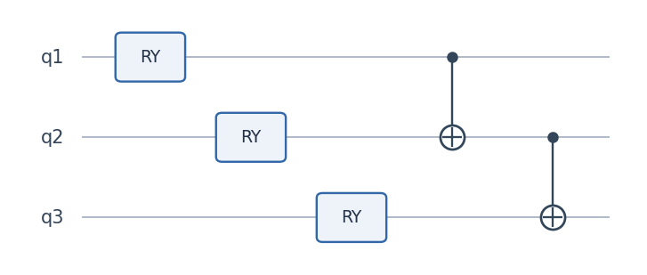
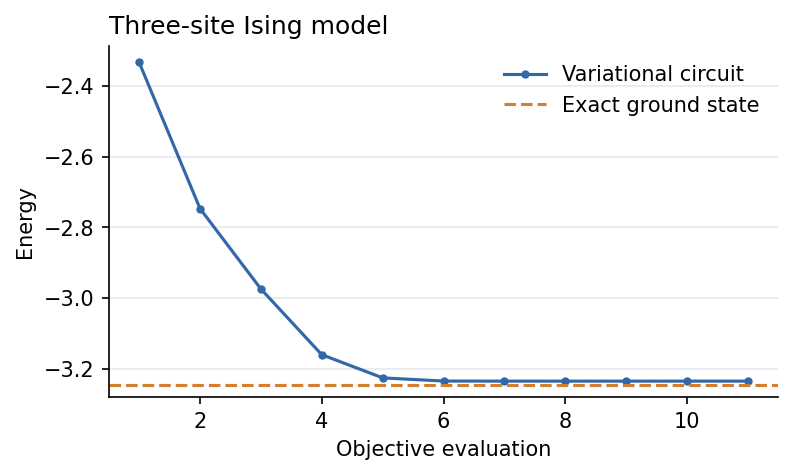
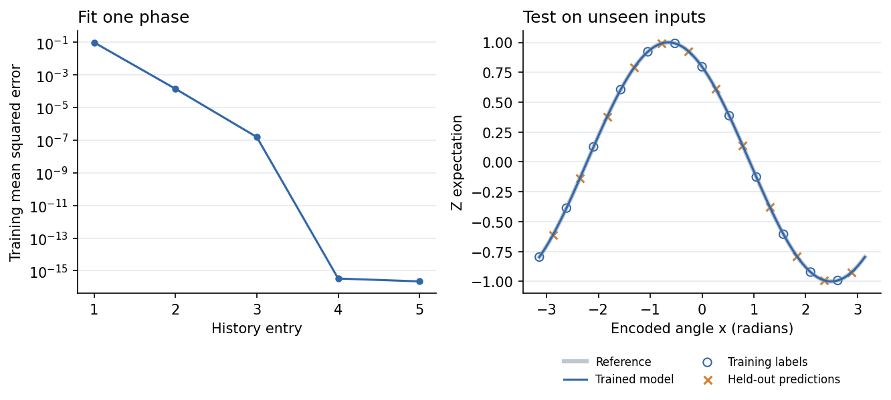
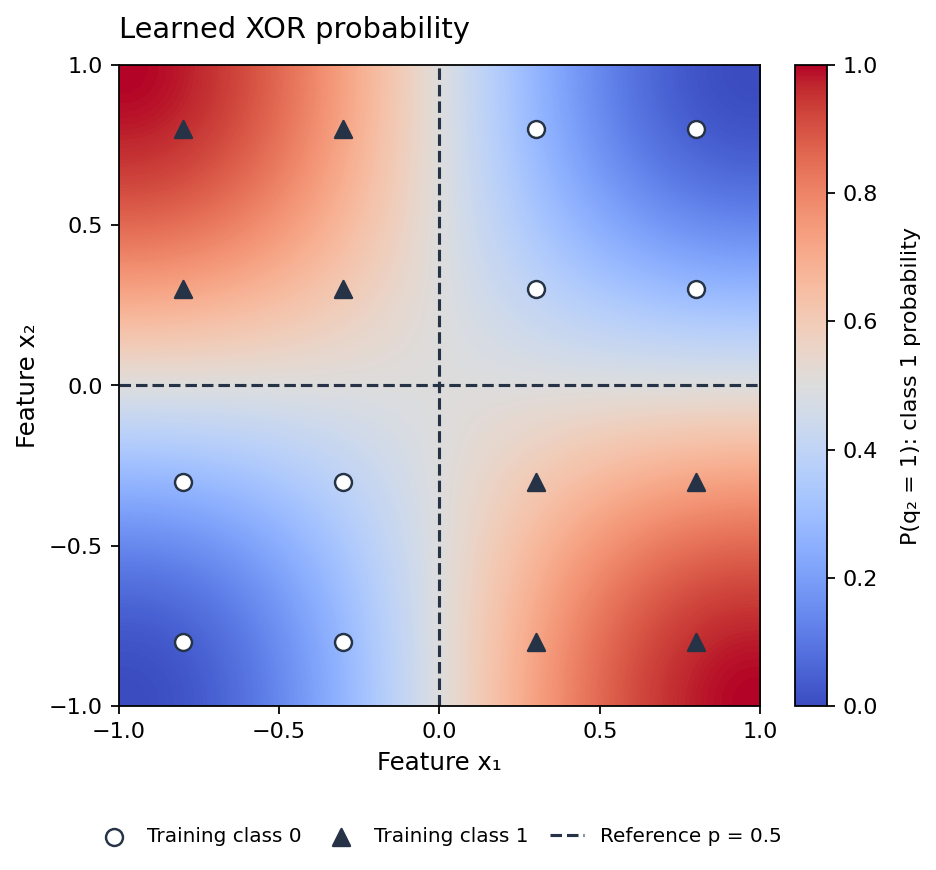

Quantum Machine Learning
A variational calculation has three pieces: an operation list, a vector of trainable parameters, and a scalar loss. variational_apply evaluates the circuit; train minimizes the loss and always returns the same three fields: loss, parameters, and history.
This page collects circuit construction, VQE, supervised regression and classification, gradient checks, noisy training, MPS approximations, and the QML API. The examples use ordinary functions and arrays, without a separate machine-learning framework or dataset loader. Statevector and density-matrix examples use exact expectations; the MPS section makes its truncation explicit.
Start with a trainable gate
A matrix-valued function makes a gate trainable. A numeric gate string instead fixes its angle:
using BlueTangle
ops = [Op("RY", _RY, 1)] # one trainable angle
fixed = [Op("RY(0.3)", 1)] # a fixed gate
state = variational_apply([0.3], ops)
@assert state ≈ apply(zero_state(1), fixed)
plotq(ops)q1: ─[RY]─Parameters follow operation order; multi-argument gates consume consecutive entries. Supply one initial value for each trainable angle; fixed gates consume none. By default the input is |0…0⟩; pass init=state to evaluate the same circuit on another input. Keep trainable gates in this top-level list; named blocks can group fixed subcircuits, including their noise and measurement operations.
Minimize the energy of two spins
For the open-chain Hamiltonian H = -Z₁Z₂ - 0.7(X₁+X₂), take two layers of local Y rotations separated by a CNOT. Define the energy as an ordinary function of the four angles:
using BlueTangle, LinearAlgebra
H = hamiltonian(2, [-1.0, "Z,Z", -0.7, "X"])
ops = [Op("RY", _RY, 1), Op("RY", _RY, 2), Op("CX", 1, 2),
Op("RY", _RY, 1), Op("RY", _RY, 2)]
energy(parameters) = real(expect(variational_apply(parameters, ops), H))
initial = fill(0.3, 4)
result = train(energy, initial; iterations=40)
exact_energy = eigmin(Hermitian(Matrix(H)))
@assert result.loss >= exact_energy - 1e-10
@assert isapprox(result.loss, exact_energy; atol=1e-8)
@assert result.loss ≈ energy(result.parameters)
(initial_energy=energy(initial), trained_energy=result.loss, exact_energy=exact_energy)(initial_energy = -1.4604581236872716, trained_energy = -1.7204650534085255, exact_energy = -1.7204650534085253)This small ansatz reaches the exact reference here. That is not guaranteed for a different Hamiltonian, ansatz, or initial vector. A normalized variational state must have energy at or above the exact ground-state energy; that exact diagonalization is feasible only at small system sizes.
train defaults to L-BFGS. For example, use optimizer=:adam, iterations=200, and learning_rate=0.05 to request Adam. The returned field names stay the same. result.history stores logged loss values; result.loss is the loss evaluated at the returned parameters. Set history=false when the trace is unnecessary.
Inspect and extend an ansatz
VQE minimizes the energy within a chosen parameterized circuit. A converged optimizer need not reach the true ground state: the ansatz may be too restricted, or the optimization may find a local minimum. A small exact diagonalization provides a useful reference.
using BlueTangle, LinearAlgebra
N = 3
H = hamiltonian(N, [-1.0, "Z,Z", -0.9, "X"])
exact_energy = eigmin(Hermitian(Matrix(H)))
ops = QuantumOps[Op("RY", _RY, q) for q in 1:N]
append!(ops, [Op("CX", q, q+1) for q in 1:N-1])
energy(parameters) = real(expect(variational_apply(parameters, ops), H))
initial = fill(0.3, N)
result = train(energy, initial; iterations=40)
@assert result.loss >= exact_energy - 1e-10
@assert result.loss <= energy(initial) + 1e-10
(exact=exact_energy, variational=result.loss)(exact = -3.245922864592051, variational = -3.2342474721723047)

result.parameters holds the optimized angles and result.history the logged loss values. A remaining energy gap can reflect the circuit's limited expressiveness or an optimization failure; compare circuit depth and multiple initializations before deciding which is responsible.
Custom local functions can also define variational gates. Their arguments are assigned consecutively from the parameter vector:
using BlueTangle
custom_ops = QuantumOps[Op("local RY", theta -> _RY(theta), 1),
Op("CX", 1, 2), Op("local RZ", theta -> _RZ(theta), 2)]
@assert get_N(variational_apply([0.2, 0.4], custom_ops)) == 2
plotq(custom_ops)q1: ─[local RY]────●──────────────
│
q2: ───────────────⊕───[local RZ]─
Custom gate functions must support the numerical types used by automatic differentiation. The gradient checks below give a small independent test of that numerical path.
Generate repeated layers
For repeated structures, the two generators have distinct conventions:
using BlueTangle
su2 = EfficientSU2(2, 1, ["RY"])
repeated = generate_ansatz_circuit(2, 2, ["RY", "CX"])
initial = fill(0.3, 4) # two RY layers on two qubits
su2_state = variational_apply(initial, su2)
repeated_state = variational_apply(initial, repeated)EfficientSU2 makes reps+1 rotation layers separated by reps CX layers; generate_ansatz_circuit repeats the supplied layer list exactly reps times. Both circuits take four angles here, but have different final layers. deep_circuit=false alternates disjoint nearest-neighbor CX bonds instead of using a full adjacent chain for each entangling layer.
Fit a function from labeled examples
For a minimal regression task, encode the scalar feature x as RY(x)|0⟩, then apply a trainable RY(theta) and predict its Z expectation. The two rotations add, so this model has the exact form
\[\widehat y(x;\theta)=\cos(x+\theta).\]
Fit the phase from 12 labeled inputs. Reserve 12 interleaved inputs for testing; they never enter the training loss.
using BlueTangle
ops = [Op("RY", _RY, 1)]
xtrain = collect(range(-pi, pi; length=13))[1:12]
ytrain = cos.(xtrain .+ 0.65)
xtest = xtrain .+ pi/12
ytest = cos.(xtest .+ 0.65)
function predict(parameters, x)
encoded = _RY(x) * zero_state(1)
output = variational_apply(parameters, ops; init=encoded)
return real(expect(output, gate.Z))
end
loss(parameters) = sum((predict(parameters, x)-y)^2
for (x,y) in zip(xtrain,ytrain)) / length(xtrain)
initial = [0.2]
@assert loss(initial) ≈ 1-cos(only(initial)-0.65)
fit = train(loss, initial; iterations=30)
predictions = [predict(fit.parameters, x) for x in xtest]
test_mse = sum(abs2, predictions-ytest) / length(ytest)
@assert test_mse < 1e-10
@assert predictions ≈ cos.(xtest .+ only(fit.parameters))
(initial_mse=loss(initial), training_mse=fit.loss,
heldout_mse=test_mse, fitted_phase=only(fit.parameters))(initial_mse = 0.0995528976473231, training_mse = 8.727030554666694e-31, heldout_mse = 8.357252005344345e-31, fitted_phase = 0.6499999999999987)The held-out error checks predictions at unseen inputs, while the analytic cosine checks the circuit calculation independently. Phases differing by 2pi produce the same predictions. This is an exactly representable, noiseless teaching problem, not evidence of quantum advantage or accuracy on a realistic dataset. A classical one-parameter cosine fit solves the same problem. More parameters alone do not establish better generalization.

The left panel shows recorded training losses. The right panel compares the learned curve, training labels, and held-out predictions. The figure can be regenerated with docs/generate_figures.jl in an environment containing PyPlot; training itself has no plotting dependency. Losses below machine epsilon share the plot's display floor.
Classify two features with a two-qubit circuit
Class 1 means the two feature signs differ, and class 0 means they agree: a continuous-input XOR problem. Use 16 training points and a separate 400-point test grid. The grids share no coordinates and exclude the axes, where the class boundary lies.
using BlueTangle, Statistics
train_levels = [-0.8, -0.3, 0.3, 0.8]
test_levels = collect(range(-0.95, 0.95; length=20))
train_x = [[a,b] for a in train_levels for b in train_levels]
test_x = [[a,b] for a in test_levels for b in test_levels]
label(x) = Int(xor(x[1] > 0, x[2] > 0))
train_y, test_y = label.(train_x), label.(test_x)
@assert isempty(intersect(train_levels, test_levels))
encoding = [Op("RY", _RY, 1), Op("RY", _RY, 2)]
encode(x) = variational_apply((pi/2) .* x, encoding)
train_states, test_states = encode.(train_x), encode.(test_x)
ansatz = [Op("RY", _RY, 1), Op("RY", _RY, 2),
Op("CX", 1, 2), Op("RY", _RY, 2)]
function probability(parameters, state)
psi = variational_apply(parameters, ansatz; init=state)
return abs2(psi[2]) + abs2(psi[4]) # P(q2=1), basis 00,01,10,11
endprobability (generic function with 1 method)The encoded states are fixed and prepared once. The circuit has three trainable angles, and its second-qubit probability is the class-1 score. Minimize binary cross-entropy, then apply a threshold of 0.5 on the held-out grid:
function loss(parameters)
mean(eachindex(train_states)) do i
p = clamp(probability(parameters, train_states[i]), 1e-12, 1-1e-12)
y = train_y[i]
-y*log(p) - (1-y)*log1p(-p)
end
end
initial = [0.2, 0.4, -0.1]
result = train(loss, initial; iterations=80)
train_probabilities = probability.(Ref(result.parameters), train_states)
test_probabilities = probability.(Ref(result.parameters), test_states)
train_accuracy = mean((train_probabilities .>= 0.5) .== train_y)
test_accuracy = mean((test_probabilities .>= 0.5) .== test_y)
test_cross_entropy = mean(-y*log(p)-(1-y)*log1p(-p)
for (p,y) in zip(test_probabilities,test_y))
minimum_confidence = minimum(max.(test_probabilities, 1 .- test_probabilities))
@assert test_accuracy >= 0.98
(train_accuracy=train_accuracy, test_accuracy=test_accuracy,
heldout_cross_entropy=test_cross_entropy, minimum_confidence=minimum_confidence)(train_accuracy = 1.0, test_accuracy = 1.0, heldout_cross_entropy = 0.3734943838118673, minimum_confidence = 0.5030779148037201)An independent attainable solution checks the encoding and readout conventions. At angles [pi/2, pi/2, 0], the pre-CNOT Z expectations are -sin(pi*x1/2) and -sin(pi*x2/2). Conjugating the measured Z₂ through CNOT turns it into Z₁Z₂, giving
\[p(x_1,x_2)=\frac{1-\sin(\pi x_1/2)\sin(\pi x_2/2)}{2}.\]
reference(x) = (1-sin(pi*x[1]/2)*sin(pi*x[2]/2))/2
analytic_parameters = [pi/2, pi/2, 0.0]
@assert all(isapprox(probability(analytic_parameters, encode(x)), reference(x);
atol=1e-12) for x in test_x)The dashed axes mark the analytic p=0.5 reference boundary; the colors show the trained probabilities.

For the displayed run, both accuracies are 100%, but held-out cross-entropy is about 0.3735 and the least confident correct prediction has probability only 0.5031. Perfect threshold accuracy is not high confidence: finite-shot readout near the axes can flip the predicted label. This is a small supervised-learning example, not a quantum-advantage result; the classical rule x1*x2 < 0 solves the same classification task exactly.
Choose and check a gradient
| Setting | Suitable calculation |
|---|---|
gradient=:forward (default) | Differentiable statevector or deterministic density-matrix loss |
gradient=:finite_difference | Deterministic calculations that cannot use automatic differentiation, including truncated MPS |
gradient=p -> gradient_vector | An analytic or independently implemented gradient of the complete scalar loss |
Finite differences need roughly two shifted evaluations per parameter, and their step size must resolve the loss without amplifying numerical error. Neither finite differences nor automatic differentiation turn sampled noise into a deterministic gradient. Use density evolution for an exact noisy ensemble, or define and validate an explicit stochastic gradient estimator.
This small check uses a nonlinear loss, loss(theta)=⟨Z⟩²=cos(theta)². Its derivative is -sin(2theta). Compare automatic differentiation with centered finite differences and this independent analytic answer:
using BlueTangle, ForwardDiff
ops = [Op("RY", _RY, 1)]
loss(parameters) = real(expect(variational_apply(parameters, ops), gate.Z))^2
parameters = [0.37]
h = 1e-5
automatic = ForwardDiff.gradient(loss, parameters)
finite_difference = [(loss(parameters .+ h)-loss(parameters .- h))/(2h)]
analytic = [-sin(2only(parameters))]
@assert isapprox(automatic, finite_difference; atol=1e-8)
@assert automatic ≈ analytic
(automatic=automatic, finite_difference=finite_difference, analytic=analytic)(automatic = [-0.6742879116281452], finite_difference = [-0.6742879115784195], analytic = [-0.674287911628145])For an expectation z(theta), a gate's parameter-shift rule differentiates z; a nonlinear loss such as z² still needs the chain rule 2z*dz/dtheta. Shifting the entire nonlinear loss with the expectation-value rule is generally wrong. If supplying a parameter-shift gradient through train's gradient callback, differentiate the complete loss and check that the gate's shift rule applies. Parameter-dependent MPS truncation can invalidate that rule.
Train with deterministic noise
For differentiable noisy simulation, use a density matrix to sum Kraus branches:
using BlueTangle, LinearAlgebra
ops = [Op("RY", _RY, 1)]
rho0 = zero_state(1) * zero_state(1)'
noise = NoiseModel(Noise1("bit_flip", 0.02), false)
noisy_energy(parameters) = real(expect(
variational_apply(parameters, ops; init=rho0, noise=noise), gate.Z))
rho = variational_apply([0.3], ops; init=rho0, noise=noise)
@assert isapprox(real(tr(rho)), 1; atol=1e-12)
@assert noisy_energy([0.3]) ≈ (1-2*0.02)*cos(0.3)
noisy_fit = train(noisy_energy, [0.3]; iterations=30)
@assert isapprox(noisy_fit.loss, -(1-2*0.02); atol=1e-8)
noisy_fit.loss-0.9600000000000001A statevector with stochastic noise or selective measurements samples a trajectory, so it does not define the same deterministic differentiable loss. Finite-shot training needs an explicit estimator and sampling-error treatment.
Train an MPS and check truncation bias
MPS decompositions are not supported by ForwardDiff. Use finite differences for a deterministic MPS loss and check the approximation itself. This deliberately severe example caps the bond dimension at 1, discarding entanglement created by a fixed rotation and CNOT before training a final rotation.
using BlueTangle
ops = [Op("RY(0.8)", 1), Op("CX", 1, 2), Op("RY", _RY, 1)]
initial_state = zero_state(N_MPS(2))
function mps_energy(parameters; maxdim=1)
state = variational_apply(parameters, ops; init=initial_state,
cutoff=0.0, maxdim=maxdim)
return expect(state, "Z")[1]
end
fit = train(p -> mps_energy(p), [0.3]; gradient=:finite_difference, iterations=30)
untruncated = mps_energy(fit.parameters; maxdim=2)
dense_reference = expect(variational_apply(fit.parameters, ops), "Z")[1]
@assert isapprox(fit.loss, -1; atol=1e-8)
@assert untruncated ≈ dense_reference ≈ -cos(0.8)
(truncated_loss=fit.loss, untruncated_loss=untruncated, dense_reference=dense_reference)(truncated_loss = -1.0, untruncated_loss = -0.6967067093471654, dense_reference = -0.6967067093471655)The truncated loss reaches -1, while the original circuit evaluated at the same trained parameters gives about -0.6967. The optimizer solved the supplied approximate problem; it did not validate the untruncated circuit. Here maxdim=2 retains the full two-qubit Schmidt rank and matches the dense reference. In a larger calculation, increase the bond cap, tighten the cutoff, and check the finite-difference estimate until the observables of interest converge.
Keep training efficient
Construct the operation list once and precompute fixed feature states, as the classifier does. Use history=false when loss traces are unnecessary. Local statevector gates act on amplitudes directly, avoiding full-register matrices, but the state itself still grows as 2^N; density-matrix memory grows as 4^N. MPS can reduce that cost when modest bond dimensions suffice, but verify cutoff/maxdim convergence rather than assuming it. The repository's benchmark/qml.jl compares the training paths on a specified workload; timings depend on the circuit, hardware, and compilation state.
API reference
BlueTangle.variational_apply — Function
variational_apply(parameters, ops; init=nothing, N=get_N(ops), noise=false, kwargs...)Apply consecutive parameters to an operation list and return the final state. The default input is zero_state(N); explicit vector, density-matrix, and MPS inputs are supported and are not modified. Each function-valued local gate consumes one parameter per argument; fixed operations consume none. Vector gates act directly on amplitudes without building full-register operators. Noise and conditional branches use ordinary apply semantics. Differentiating sampled trajectories is rejected: use a density matrix for an exact noisy ensemble, or define an explicit sampling estimator.
BlueTangle.train — Function
train(loss, initial_parameters; optimizer=:lbfgs, iterations=100,
learning_rate=0.01, gradient=:forward, history=true)Minimize a real scalar function of parameters. Returns the same named tuple (loss, parameters, history) for every optimizer; inputs are not modified. Use a closure with variational_apply for VQE, regression, or other quantum learning tasks. No configuration object or dataset wrapper is required. User-supplied loss functions and callbacks must be deterministic when using automatic differentiation or finite differences.
gradient=:forward uses automatic differentiation; :finite_difference handles deterministic, non-AD-compatible calculations such as truncated MPS evolution. A gradient function is also accepted. Sampled noise requires a deliberately chosen stochastic estimator; use density evolution for deterministic noisy training. Supported optimizers are LBFGS, Adam, descent, RAdam, momentum, Nesterov, and the derivative-free PRIMA methods. PRIMA uses an objective-evaluation budget. Histories record accepted iterates for LBFGS, updated iterates for first-order methods, and objective evaluations for PRIMA; history=false returns an empty history. loss always corresponds to the returned parameters.
BlueTangle.EfficientSU2 — Function
EfficientSU2(N, reps=1, gates=["RY", "RZ"]; deep_circuit=true)Return reps+1 local rotation layers, separated by reps CX layers. Adjacent CXs form a chain when deep_circuit=true; otherwise their bonds alternate in disjoint layers.
BlueTangle.generate_ansatz_circuit — Function
generate_ansatz_circuit(N, reps=1, gates=["RY", "RZ", "CX"]; deep_circuit=true)Repeat the supplied gate-name layers reps times. Bare rotation names make trainable gates; explicit angles such as "RY(0.3)" remain fixed. Unlike EfficientSU2, no final rotation layer is added automatically.